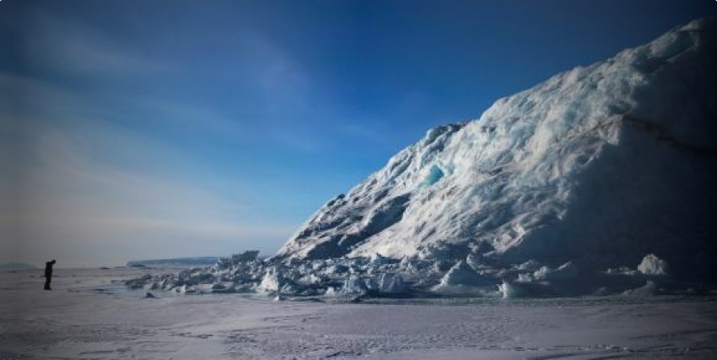
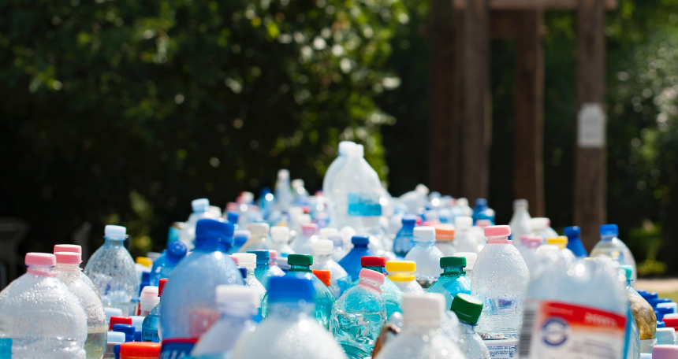

<!DOCTYPE html>
<html><!DOCTYPE html>
  <html lang="es">
    <head>
      <meta charset="UTF-8">
      <meta name="viewport" content="width=device-width, initial-scale=1.0">
      <title>Ecoactualizate</title>
      <link rel="shortcut icon" href="../assets/favicon.ico" type="image/x-icon">
      <link rel="preconnect" href="https://fonts.googleapis.com">
      <link rel="preconnect" href="https://fonts.gstatic.com" crossorigin>
      <link href="https://fonts.googleapis.com/css2?family=Montserrat:wght@200;300;400;500;600;700;800;900&amp;display=swap" rel="stylesheet">
      <meta http-equiv="X-UA-Compatible" content="IE=edge">
      <script defer src="../js/index.js" type="module"></script>
      <link rel="stylesheet" href="../css/noticias.css">
    </head>
  </html>
  <body>
    <!-- **************** Navbar **************** -->
        <section class="navbar-light">
              <div class="navbar-container container"><a class="branding" href="../">
                  <h3 class="h3 branding__title">Ecoactualizate</h3></a>
                    <button class="menu-toggler"></button>
                <nav class="nav-menu">
                  <ul>
                    <li><a class="link" href="../">Inicio</a></li>
                    <li><a class="link link--active" href="../actualizate/actualizate.html">Actualizate</a></li>
                    <li><a class="link" href="../noticias/noticias.html">Noticias</a></li>
                    <li><a class="link" href="../nosotros/nosotros.html">Nosotros</a></li>
                  </ul>
                  <div class="nav-menu__button"> <a class="btn btn-primary btn-md" href="../contribuir/contribuir.html">Contribuir</a></div>
                </nav>
              </div>
        </section>
    <!-- **************** Fin Navbar **************** -->
    <!-- ***************************** MAIN *****************************-->
    <main>
      <section class="noticias">
        <div class="noticia noticia--active">
          <div class="noticia-container container"><a class="noticia__image" href="../noticias/noticia1.html"></a>
            <div class="noticia-metadata">
              <p class="body bold">Cambio climático y Medio Ambiente</p>
              <div class="noticia-metadata__fecha-publicacion">
                <p class="caption bold">02 Ago 2021</p>
              </div>
            </div>
            <div class="noticia__content"><a class="h3 semi-bold" href="../noticias/noticia1.html">Gran capa de hielo se derritió en una semana en Groenlandia</a><a href="../noticias/noticia1.html">Una ola de calor en Groenlandia, con temperaturas más de diez
            grados por encima de las normales estacionales, ha provocado esta
            semana un episodio de derretimiento “masivo” del casquete
            de hielo de Groenlandia, advirtieron los glaciólogos</a></div>
            <div class="noticia__btn"><a class="btn btn-lg btn-secondary" href="../noticias/noticia1.html">Leer más</a></div>
          </div>
        </div>
        <div class="noticia">
          <div class="noticia-container container"><a class="noticia__image" href="../noticias/noticia2.html"></a>
            <div class="noticia-metadata">
              <p class="body bold">Comercial</p>
              <div class="noticia-metadata__fecha-publicacion">
                <p class="caption bold">30 Mayo 2021</p>
              </div>
            </div>
            <div class="noticia__content"><a class="h3 semi-bold" href="../noticias/noticia2.html">Colombiano logró crear fertilizante con gas contaminante de la atmósfera</a><a href="../noticias/noticia2.html">Producir fertilizante a partir de uno de los mayores contaminantes de la
            atmósfera de una manera más fácil es lo qeu ha logrado por primera vez un equipo
            de químicos de Miami, los cuales confían en abrir así la puerta a que los granjeros
            lo puedan elaborar algún día en el mismo logar de los cultivos.</a></div>
            <div class="noticia__btn"><a class="btn btn-lg btn-secondary" href="../noticias/noticia2.html">Leer más</a></div>
          </div>
        </div>
        <div class="noticia noticia--active">
          <div class="noticia-container container"><a class="noticia__image" href="../noticias/noticia3.html"></a>
            <div class="noticia-metadata">
              <p class="body bold">Comercial</p>
              <div class="noticia-metadata__fecha-publicacion">
                <p class="caption bold">14 Ene 2021</p>
              </div>
            </div>
            <div class="noticia__content"><a class="h3 semi-bold" href="../noticias/noticia3.html">HP lanza impresora hecha 25% con plástico reciclado</a><a href="../noticias/noticia3.html">HP está de lanzamiento con varias impresoras que le apuntan a la efectividad
            en el trabajo, diseñadas para necesidades de alto volulmen de impresión, ideales para micro
            y pequeñas empresas. Las HP Nevestop Laser son las primeras sin cartucho del mercado y le apuntan
            a satisfacer las necesidades de los empresarios.</a></div>
            <div class="noticia__btn"><a class="btn btn-lg btn-secondary" href="../noticias/noticia3.html">Leer más</a></div>
          </div>
        </div>
        <div class="noticia">
          <div class="noticia-container container"><a class="noticia__image" href="../noticias/noticia4.html"></a>
            <div class="noticia-metadata">
              <p class="body bold">Innovación, Reciclaje</p>
              <div class="noticia-metadata__fecha-publicacion">
                <p class="caption bold">14 Ene 2021</p>
              </div>
            </div>
            <div class="noticia__content"><a class="h3 semi-bold" href="../noticias/noticia4.html">Vestido de novia fue fabricado con 1500 tapabocas reciclados</a><a href="../noticias/noticia4.html">Una creacción del diseñador Tom Silverwood en colaboración con 
            'Hitched UK', un portal dedicado a la asesoría de bodas, irrumpió en el
            mundo de la moda con un concepto bastante innovador.</a></div>
            <div class="noticia__btn"><a class="btn btn-lg btn-secondary" href="../noticias/noticia4.html">Leer más</a></div>
          </div>
        </div>
        <div class="noticia noticia--active">
          <div class="noticia-container container"><a class="noticia__image" href="../noticias/noticia5.html"></a>
            <div class="noticia-metadata">
              <p class="body bold">Reciclaje</p>
              <div class="noticia-metadata__fecha-publicacion">
                <p class="caption bold">22 Ago 2021</p>
              </div>
            </div>
            <div class="noticia__content"><a class="h3 semi-bold" href="../noticias/noticia5.html">Nuevo reciclaje de botellas favorece fabricación sostenible de neumaticos</a><a href="../noticias/noticia5.html">El reciclaje del plástico procedente de botellas PET sin los pasos químicos
            intermedios necesarios hasta ahora permitirá reemplazar elpoliéster convencional
            de las carcasas de los neumáticos por...</a></div>
            <div class="noticia__btn"><a class="btn btn-lg btn-secondary" href="../noticias/noticia5.html">Leer más</a></div>
          </div>
        </div>
      </section>
      <button class="scroll-top-btn hidden"></button>
    </main>
    <!-- ***************************** FIN MAIN ***************************** -->
    <!-- ***************************** FOOTER *****************************-->
    <footer>
            <section class="footer">
              <div class="footer-container container">
                <div class="footer-social">
                  <h3 class="h3 h3-upper extrabold">EL FUTURO NO ES DESECHABLE</h3>
                  <div class="footer-social__container"><a href="https://api.whatsapp.com/send?phone=3002047922"></a><a href="mailto:sofiatobon2020@gmail.com"></a></div>
                </div>
                <div class="footer-branding"><a class="footer-branding__container" href="#">
                    <p class="body bold">Ecoactualizate</p></a><a class="btn btn-primary btn-sm" href="../contribuir/contribuir.html">Contribuir</a></div>
              </div>
            </section>
    </footer>
    <!-- ***************************** FIN FOOTER ***************************** -->
  </body>
</html>